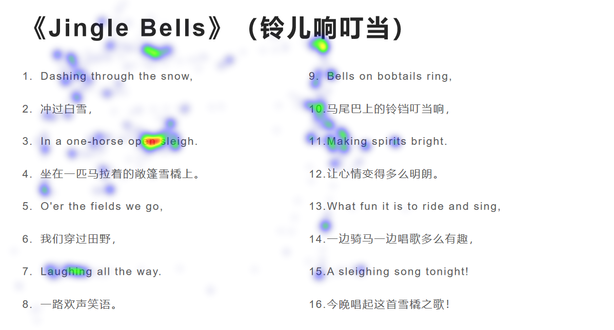
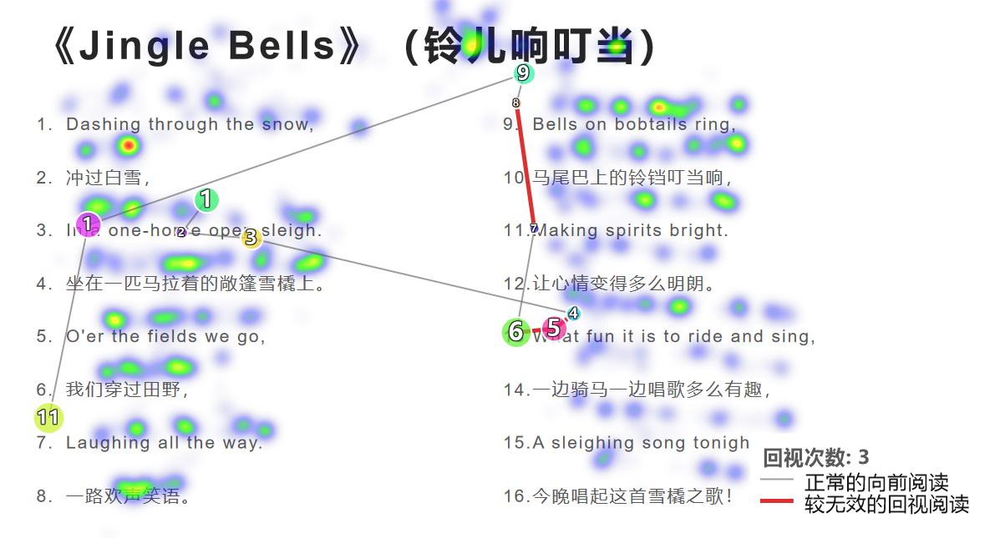

降低研究门槛
复用 Tobii 4C / 5 等消费级设备，减少昂贵实验室设备与复杂软件链路的依赖。
基于 Tobii 4C / 5 搭建低成本眼动交互与行为评测平台，将校准、任务呈现、注视采集、可视化与指标导出串成一套可复用流程，帮助设计团队更快发现页面、游戏与电商路径中的认知阻力。
01 · 项目命题
传统可用性访谈能告诉我们用户“觉得哪里有问题”，眼动证据则进一步回答：他是否看到了、何时看到、停留多久、是否反复回看。这个项目将消费级硬件转化为快速评测工具，让视觉注意从主观判断变为可复核的数据。
复用 Tobii 4C / 5 等消费级设备，减少昂贵实验室设备与复杂软件链路的依赖。
从原始注视坐标到热力图、扫视路径与指标表，每个判断都能回到数据与任务情境。
把“发现问题—调整设计—复测验证”压缩为一条轻量工作流，支持快速对比版本。
02 · 研究工作流
平台把研究前的质控、研究中的任务与采集、研究后的分析输出放在同一套操作逻辑中，降低跨工具切换带来的成本与数据错位。
实时预览头部、双眼与注视状态，帮助参与者调整坐姿和视距。
9 点校准、5 点验证，输出像素误差与视角误差质控报告。
呈现图片或 PDF 任务，同步记录注视坐标、时间戳与屏幕范围。
生成密度热力图与扫视路径；用线条和节点识别回看与跳读。
计算核心阅读 / 浏览指标，并按需导出 Excel 进入后续统计分析。
03 · 项目证据
热力图回答“注意集中在哪里”，扫视路径回答“以怎样的顺序到达”。两者叠加后，可以区分内容吸引、寻找成本、跳读与回视，而不只得到一张好看的图。

颜色强度映射注视密度，用于识别高关注区、视觉盲区与信息竞争。

节点大小表示注视时长，数字表示顺序，红线突出相对低效的回视行为。
04 · 质控与指标
消费级眼动设备的价值取决于质控。平台通过稳定等待、离群值剔除与点级误差报告管理数据质量，再用 I-VT 规则将连续采样转为可解释的注视事件。
05 · 应用场景
点击场景查看评测关注点。平台不替代用户研究判断，而是把设计争议转译成可观察、可比较的行为问题。
比较不同信息层级、布局密度与行动按钮位置，定位视觉盲区、搜索绕行和注意竞争，为下一轮原型调整提供证据。
06 · 下一阶段
当前版本已完成从采集到可视化和六项指标导出的闭环。下一步将分析对象从“整张页面”下钻到具体兴趣区，使结论更直接地指向组件和转化节点。
通过版面结构或视觉模型识别标题、导航、商品卡、CTA 等关键兴趣区，允许人工校正。
补充首次注视时间（TTFF）、总停留时长、访问次数与区域间转移概率。
将 A/B 版本的注意路径与任务完成节点并列展示，形成可直接复用的迭代报告。
项目的核心不是降低硬件价格，而是把眼动数据变成设计团队能理解、能追溯、能用于下一次迭代的语言。